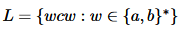
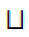
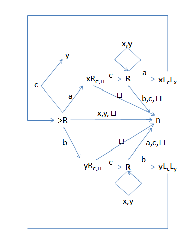

This project involved creating a Turing machine that accepts the language . There's nothing spectacular about this, but I really enjoyed making it and learning about how automata work. The machine starts at the state >R which moves the read head one space to the right along the input tape. The machine then moves to a different state according to the arrow that corresponds with the next character on the tape. A character within a state (not along an arrow) indicates that that character is written at the current location on the tape. The states R and L move the head along the tape to the right or left respectively. If these have a subscript, they move the head until the subscript character is found. The character  represents a blank space on the tape, while the states y and n accept or reject the input string respectively.
